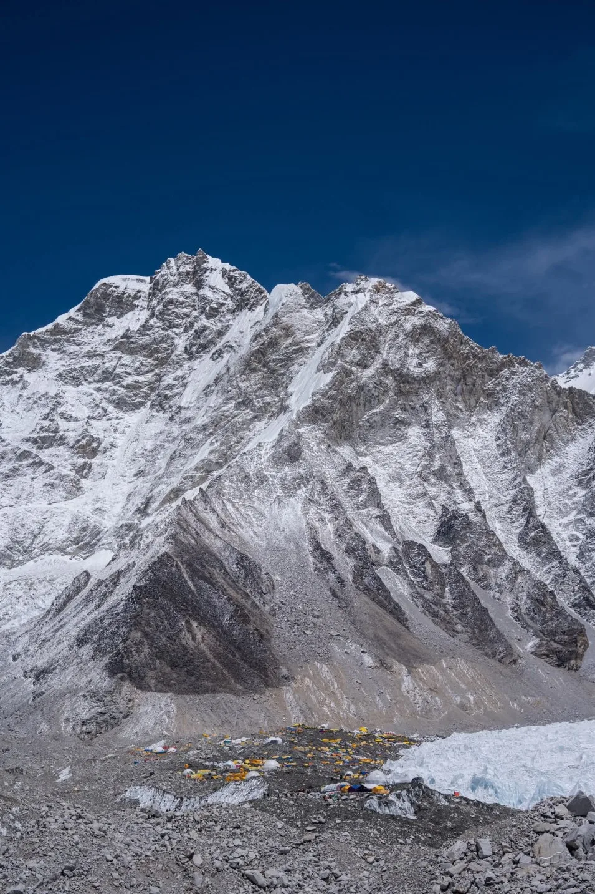
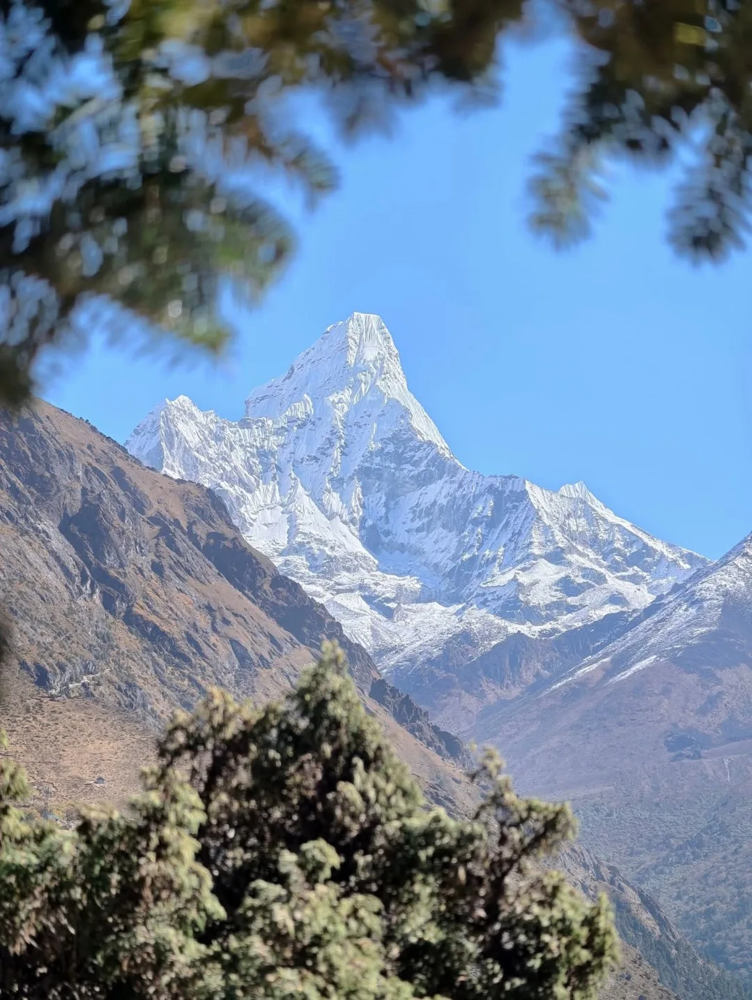
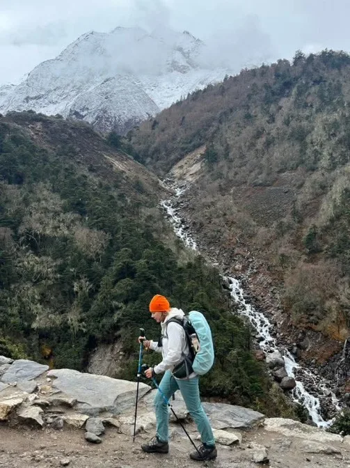

1. Official Trail Grading & Technical Rating: Is EBC a Hike or a Climb?

In global trekking classifications, the Everest Base Camp Trek is officially graded as STRENUOUS. However, there is a fundamental distinction that every prospective trekker must understand:
Everest Base Camp is a non-technical alpine hike, NOT a mountaineering expedition.
- Zero Technical Climbing: You do not need ropes, crampons, ice axes, harnesses, or climbing helmets on the classic trek to EBC and Kala Patthar. You will never cross a crevassed glacier on aluminum ladders or hang from fixed ropes.
- Walking Footpaths & Moraines: The entire route consists of well-trodden dirt trails, hand-chiseled stone stairs, gravel paths, and rocky glacial moraines. If you can walk on uneven rocky ground, you possess all the technical skill required.
- The True Triple Challenge: What makes EBC genuinely strenuous is not technical terrain, but three compounding factors:
- Severe Atmospheric Hypoxia: Spending nearly a week living and sleeping between 3,800m and 5,164m where oxygen molecules are sparse.
- Cumulative Physical Fatigue: Hiking 5 to 7 hours daily for 12 to 14 consecutive days over 130 kilometers.
- Environmental Hardship: Sub-zero bedroom temperatures (-10°C to -20°C), bone-dry air causing the "Khumbu cough," and rustic teahouse amenities.
2. Master Day-by-Day Difficulty & Elevation Matrix (130km Breakdown)

The classic Everest Base Camp route spans 130 kilometers round-trip from Lukla. Review this master day-by-day difficulty breakdown to understand where energy demands peak:
| Day & Stage | Distance | Elevation Gain / Loss | Hiking Hours | Difficulty Rating & Key Terrain |
|---|---|---|---|---|
| Day 01: Lukla to Phakding | 9.0 km | 2,846m → 2,610m (-236m) | 3.5 – 4 hrs | Easy: Gentle river descent; suspension bridges |
| Day 02: Phakding to Namche Bazaar | 11.5 km | 2,610m → 3,440m (+830m) | 6 – 7 hrs | Strenuous: Crux 1: The relentless Namche hill (+600m) |
| Day 03: Namche Acclimatization Hike | 5.0 km | 3,440m ↔ 3,880m (+440m) | 3 – 4 hrs | Moderate: Day hike to Hotel Everest View; active rest |
| Day 04: Namche to Tengboche | 9.5 km | 3,440m → 3,860m (+420m) | 5 – 6 hrs | Moderate-Strenuous: Drop to Phunki Tenga; steep climb |
| Day 05: Tengboche to Dingboche | 10.8 km | 3,860m → 4,410m (+550m) | 5.5 hrs | Moderate: Crossing treeline into alpine tundra |
| Day 06: Dingboche Acclimatization Hike | 4.5 km | 4,410m ↔ 4,900m (+490m) | 3.5 – 4 hrs | Moderate: Nagarjun Peak ridge climb; thin air |
| Day 07: Dingboche to Lobuche | 11.0 km | 4,410m → 4,940m (+530m) | 5 – 6 hrs | Strenuous: Crux 2: The steep Thukla Memorial Pass |
| Day 08: Lobuche to Gorak Shep & EBC | 12.5 km | 4,940m → 5,164m → 5,364m | 7 – 8 hrs | Very Strenuous: Crux 3: Shifting Khumbu glacial moraines |
| Day 09: Kala Patthar Summit & Pheriche | 14.0 km | 5,164m → 5,545m → 4,240m | 7 – 8 hrs | Peak Crux: Pre-dawn summit push at -20°C; long descent |
| Day 10: Pheriche to Namche Bazaar | 18.5 km | 4,240m → 3,440m (-800m) | 6 – 7 hrs | Moderate: Long downhill distance; rich oxygen return |
| Day 11: Namche Bazaar to Lukla | 19.0 km | 3,440m → 2,846m (-594m) | 6.5 – 7 hrs | Moderate: Final long downhill; knee impact on stone steps |
| Day 12: Lukla to Kathmandu / Manthali | Flight | 2,846m → 1,400m | 35 min flight | Easy: Mountain flight departure |
3. The Hypoxia & Thin Air Challenge: Atmospheric Oxygen from Lukla to Kala Patthar
The paramount factor separating Everest Base Camp from standard mountain hikes is altitude-induced hypoxia. As you climb higher into the troposphere, the weight of the air column above decreases, causing air molecules to spread apart.
Review the progressive drop in effective oxygen availability as you ascend the Khumbu Valley:
| Location & Landmark | Altitude (Meters) | Altitude (Feet) | Effective Oxygen vs Sea Level | Physiological Impact on Body |
|---|---|---|---|---|
| Kathmandu Valley | 1,400m | 4,593ft | 86% | Negligible; normal resting metabolism |
| Lukla Airport | 2,846m | 9,337ft | 72% | Mild shortness of breath on stairs; mild hyperventilation |
| Namche Bazaar | 3,440m | 11,286ft | 67% | High-altitude threshold; resting heart rate increases by 15–20% |
| Tengboche Monastery | 3,860m | 12,664ft | 63% | Uphill steps feel significantly heavier; vivid dreams |
| Dingboche Village | 4,410m | 14,468ft | 59% | Noticeable loss of appetite; Cheyne-Stokes sleep patterns |
| Lobuche Lodge | 4,940m | 16,207ft | 54% | Minor exertion causes breathlessness; SpO2 drops to 75–82% |
| Gorak Shep Settlement | 5,164m | 16,942ft | 52% | Highest sleeping altitude; intense cold; low appetite |
| Everest Base Camp | 5,364m | 17,598ft | 51% | Glacial moraine; breathing rate doubles; triumphant milestone |
| Kala Patthar Summit | 5,545m | 18,192ft | 49% | Less than half sea-level oxygen; intense physical effort per step |
4. The 3 Trail Cruxes: The Namche Hill, The Thukla Memorial Pass & The Khumbu Glacier Moraine

While the trail is mostly gradual, there are three specific geographical cruxes that test every trekker's physical and mental resolve:
Crux 1: The Namche Hill (Day 2)
- The Obstacle: A continuous, grueling +600-meter vertical climb over dusty pine switchbacks after crossing the soaring Hillary Suspension Bridge.
- Why It's Hard: Your legs have not yet developed mountain stamina, you are carrying your daypack under warm afternoon sunshine, and the air begins thinning above 3,000m.
- Strategy: Take small, rhythmic steps; breathe steadily through your nose; stop at the mid-point Everest viewpoint clearing for water and fruit snacks.
Crux 2: The Thukla Memorial Pass (Day 7)
- The Obstacle: Climbing +300 vertical meters from the lunch stop at Dughla (4,620m) up a steep, boulder-strewn zigzag moraine wall to 4,830m.
- Why It's Hard: You are operating under ~55% oxygen; every step feels heavy, and the steep slope offers zero shade or wind protection.
- Reward: The crest of the pass houses the poignant stone chortens and memorials honoring fallen Everest mountaineers, including Scott Fischer and Babu Chiri Sherpa.
Crux 3: The Khumbu Glacial Moraine (Day 8)
- The Obstacle: Traversing the lateral moraine from Gorak Shep to Everest Base Camp over shifting, undulating glacial debris.
- Why It's Hard: There is no flat path. You are stepping over loose scree, rolling granite boulders, and slippery dirt ridges over the frozen Khumbu Glacier. It demands focused foot placement, ankle balance, and pole support for 3 hours each way.
5. Kala Patthar Summit Push (5,545m): The Physical & Mental Pinnacle

Most people assume that reaching Everest Base Camp (5,364m) is the most difficult moment of the trek. In reality, the summit ascent of Kala Patthar (5,545m / 18,192ft) is significantly more physically demanding:
- The Challenge: A steep, sustained +381-meter vertical ascent directly from Gorak Shep. You wake up at 4:00 AM under pitch-black skies and begin climbing by headlamp.
- Extreme Environmental Factors:
- Brutal Cold: Pre-dawn temperatures routinely dip between -15°C and -25°C, with biting Himalayan winds that pierce standard gloves.
- Under 50% Oxygen: You are taking two to three deep breaths for every single upward step. Your heart rate sits near maximum aerobic capacity even at a slow walking cadence.
- Why It Is Non-Negotiable: From Everest Base Camp itself, Mount Everest's summit is hidden behind the massive shoulder of Nuptse. Kala Patthar provides the undisputed greatest panoramic sunrise view on Earth—looking directly across the black pyramid of Everest, the snowy wall of Nuptse, Lhotse, and the twisting Khumbu Icefall.
6. The 'Khumbu Cough' & Respiratory Strain: Causes, Treatment & Prevention
One of the most pervasive physical hurdles on the Everest trek is the infamous "Khumbu Cough" (high-altitude dry bronchitis):
- What Causes It? Above 3,500 meters, the mountain air is exceptionally cold, thin, and desert-dry. To pull enough oxygen into your bloodstream, your lungs hyperventilate, forcing you to breathe rapidly through your mouth. This rapid flow of sub-zero, dry air strips moisture from your bronchial linings, causing severe irritation, inflammation, and persistent coughing spasms that can even crack ribs if left unaddressed.
- How to Prevent It:
- Wear a Buff or Neck Gaiter Constantly: From Namche Bazaar onwards, pull a merino wool or fleece Buff over your nose and mouth whenever hiking. It traps your exhaled warmth and humidity, pre-warming and humidifying every breath before it hits your lungs.
- Suck on Menthol / Throat Lozenges: Keeps salivary glands active and coats the throat lining.
- Hydrate with Warm Teas: Drink at least 4 liters of hot ginger-lemon-honey tea, garlic soup, and boiled water daily. Never drink cold water from your bottle above Dingboche.
7. The Descent Challenge: Knee Strain & Eccentric Muscle Fatigue Returning from 5,364m
Many hikers celebrate reaching Base Camp and assume the hard work is over. However, the 3-day descent from Gorak Shep back to Lukla is physically more damaging to muscles and joints than the climb up:
Over just three days (Days 9, 10, and 11), you will drop over 2,500 vertical meters across nearly 50 kilometers of trail:
Eccentric Muscle Trauma
Stepping down thousands of granite staircases forces your quadriceps into constant eccentric elongation. Each downward impact subjects your knee joints to three to four times your body weight, leading to severe delayed onset muscle soreness (DOMS) and patellar tendonitis.
Preventing "Hiker's Black Toenails"
Descending steep slopes can cause your toes to slam repeatedly into the front toe-box of your boots. Re-lace your boots tightly across the bridge and ankle before heading downhill, lock your heels back, and clip your toenails short before departing Kathmandu.
8. Weather & Seasonal Extremes: How Temperatures Dictate Perceived Difficulty

The difficulty of Everest Base Camp is intimately tied to the month you step onto the trail:
| Season & Months | Perceived Difficulty | Gorak Shep Temperatures | Key Environmental Challenges |
|---|---|---|---|
| Autumn (Oct – Nov) | Moderate-Strenuous (Prime) | -5°C to -15°C (Night) | Dry, clear trails; stable sunny skies; high crowds at teahouses; moderate cold. |
| Spring (Mar – May) | Moderate-Strenuous (Prime) | 0°C to -10°C (Night) | Warm lower valleys; blooming rhododendrons; afternoon clouds; active climber camp at EBC. |
| Winter (Dec – Feb) | Severe / Very Strenuous | -15°C to -25°C (Night) | Extreme, biting cold; frozen water pipes; snowpack and black ice on moraines; shorter daylight. |
| Monsoon (Jun – Aug) | High / Unpleasant | +5°C to 0°C (Wet) | Persistent rain; leeches in lower forests; obscured mountain views; frequent Lukla flight cancellations. |
9. Teahouse Realities & Unheated Sleeping Quarters: The Mental Toll
Physical fitness is only half the battle. Your ability to maintain high morale under rustic living conditions determines whether you enjoy the trek:
- Unheated Bedrooms: In standard teahouses above Namche, bedrooms are completely unheated. Plywood walls provide wind protection, but bedroom temperatures in Lobuche and Gorak Shep routinely plunge between -5°C and -15°C. Condensation on windowpanes freezes solid into sheets of frost.
- The Dining Room Sanctuary: The only heated room in the teahouse is the central dining hall, kept warm in the evening by a metal stove fueled by dried yak dung. Trekkers huddle here until 8:30 PM before sprinting into their sleeping bags.
- The Nalgene Hot Water Bottle Trick: Buy a 1-liter uninsulated Nalgene bottle, pay the lodge cook to fill it with boiling water before bed, and slide it inside your sleeping bag near your feet. It radiates warmth for 6 to 8 hours and provides clean, unfrozen drinking water in the morning.
10. Acute Mountain Sickness (AMS), HAPE & HACE: Recognition & Emergency Protocol
Acclimatization is a biochemical process that cannot be rushed. The certified Sherpa guides at Igloo Himalaya Treks follow strict clinical protocols:
Daily Oximeter Checks
Your guide measures your blood oxygen saturation (SpO2) and resting pulse twice daily (morning and evening). While SpO2 drops naturally from ~98% at sea level to 75–85% at Gorak Shep, a sudden precipitous drop below 70% signals an immediate need for rest or descent.
The Three Golden Rules of Altitude
- Any sickness at altitude is altitude sickness until proven otherwise.
- Never ascend with symptoms of Acute Mountain Sickness.
- If symptoms worsen or red flags appear, DESCEND IMMEDIATELY.
11. Can Beginners Trek to Everest Base Camp? An Honest Assessment
Yes, absolutely. Every year, thousands of first-time hikers with zero prior high-altitude experience successfully reach Everest Base Camp:
On standard 14-day itineraries operated by Igloo Himalaya Treks, the success rate for beginners is approximately 90% to 92%. Beginners succeed when they respect these fundamental guidelines:
- Never Book a Rushed 10- or 11-Day Itinerary: Budget operators cut costs by eliminating rest days at Namche and Dingboche. This dramatically increases AMS failure rates to over 40%. A proper 14-day itinerary is essential.
- Walk at a Conversational Pace: Walk so slowly on Days 1 through 4 that it feels almost comical. Never let your heart rate spike into anaerobic zones.
- Hire a Mountain Porter: Carrying only a 5kg daypack (water, camera, layers) while a porter carries your 12kg duffel preserves up to 40% of your daily energy.
12. Physical Fitness Benchmarks: Are You Fit Enough for EBC?
Test your physical readiness against these three practical benchmarks 8 weeks before departure:
Benchmark 1: 60-Minute Continuous Cardio
Can you jog, cycle, or walk on an incline continuously for 60 minutes at a moderate pace without feeling exhausted?
Benchmark 2: 50 Flights of Stairs
Can you climb 50 flights of stairs (or 45 minutes on a StairMaster at Level 5) carrying a 5kg backpack without dizziness?
Benchmark 3: 16km Weekend Trail Hike
Can you hike 16 to 18 kilometers (10–11 miles) with 700m+ elevation gain in a local park carrying a 7kg pack in under 5 hours?
Evaluation Verdict
If you can check off these three tests, your cardiovascular foundation and leg endurance are 100% sufficient to conquer Everest Base Camp!
13. 12-Week Progressive Conditioning Plan for Everest Base Camp
Follow this structured 12-week conditioning plan to prepare your body for the physical demands of the trail:
- Phase 1: Aerobic Base (Weeks 1 to 4):
- Perform 45 minutes of low-intensity Zone 2 cardio 3 times per week (incline treadmill walking, cycling, rowing).
- Bodyweight squats (3 x 15), lunges (3 x 12 per leg), and 60-second planks twice weekly.
- Phase 2: Stair & Strength Loading (Weeks 5 to 8):
- 2x weekly StairMaster or incline treadmill sessions (45–60 min) wearing a 5kg backpack.
- Add weighted Bulgarian split squats and eccentric box step-downs to build knee cartilage resilience.
- Phase 3: Specificity & Rucking (Weeks 9 to 11):
- Weekend outdoor trail hikes (14–18km with an 8kg backpack on uneven, hilly terrain).
- Break in your official trekking boots and practice hiking with dual trekking poles.
- Week 12: Taper & Rest: Gentle mobility stretching, high hydration, and adequate sleep before your departure flight.
14. Gear & Clothing Strategies That Directly Alleviate Difficulty

Proper technical gear directly reduces the perceived difficulty of the trek:
- Dual Trekking Poles: Studies show that using two trekking poles reduces knee impact by up to 25% on descents and engages arm and shoulder muscles to assist leg drive on steep climbs.
- The 4-Layer Clothing System:
- Moisture-wicking merino wool base layer (never cotton!).
- Breathable grid-fleece mid-layer.
- 800+ fill-power down jacket with hood for high camps.
- Gore-Tex waterproof/windproof shell jacket.
- Broken-In Hiking Boots: Blisters are the #1 non-altitude reason trekkers turn back. Wear boots with medium ankle support broken in for at least 50km before departure.
15. EBC Difficulty Compared: vs. Annapurna Circuit vs. Kilimanjaro vs. Manaslu
To contextualize Everest Base Camp against other premier trekking adventures around the world, review this comparative analysis:
| Trek / Mountain Route | Duration | Peak Elevation | Max Sleeping Elevation | High Pass Crossing | Overall Difficulty Grade |
|---|---|---|---|---|---|
| Everest Base Camp (EBC) | 12–14 Days | 5,545m (Kala Patthar) | 5,164m (Gorak Shep) | None (Valley moraine) | STRENUOUS |
| Annapurna Circuit Trek | 12–14 Days | 5,416m (Thorong La) | 4,920m (Thorong Phedi) | Yes (Thorong La Pass) | STRENUOUS |
| Mount Kilimanjaro (Machame) | 7 Days | 5,895m (Uhuru Peak) | 4,670m (Barafu Camp) | Peak summit climb | VERY STRENUOUS (Rapid Ascent) |
| Manaslu Circuit Trek | 14 Days | 5,160m (Larkya La) | 4,460m (Dharamsala) | Yes (Larkya La Pass) | STRENUOUS+ (Remote) |
| Langtang Valley Trek | 7–8 Days | 4,773m (Kyanjin Ri) | 3,870m (Kyanjin Gompa) | None (Valley route) | MODERATE |
16. Medical Safety, Evacuation Readiness & Insurance Requirements
Because of the high altitude, robust emergency infrastructure is critical:
- Himalayan Rescue Association (HRA) Clinic at Pheriche: Staffed during spring and autumn by volunteer volunteer Western doctors specializing in high-altitude medicine. They operate a hyperbaric Gamow bag and provide clinical consultations for trekkers suffering from AMS.
- Helicopter Evacuation Network: The Khumbu Valley possesses the world's most advanced mountain helicopter rescue network. In clear visibility, rescue helicopters from Kathmandu or Lukla can land in Namche, Pheriche, Dingboche, or Gorak Shep within 45 to 60 minutes.
- Insurance Mandate: Your travel insurance policy must explicitly cover hiking and trekking up to 6,000 meters with emergency helicopter extraction. Standard policies often cap medical evacuation at 3,000m.
Frequently Asked Questions (FAQ) About Everest Base Camp Trek Difficulty
Select a category below to explore expert answers to the most common questions travelers ask about EBC Trek Difficulty Guide:
Difficulty & Fitness

Ready to Experience the Himalayas?
Whether you are preparing for high-altitude trekking, cultural circuits, or alpine summit expeditions, start planning a bespoke journey tailored to your fitness, travel season, and style.